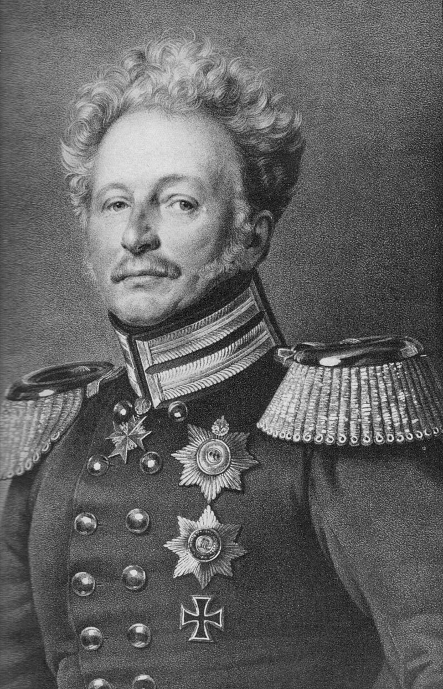
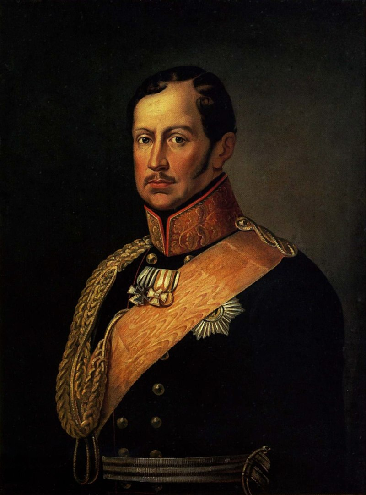
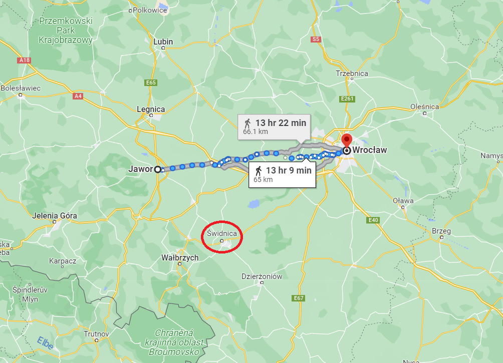

휴전 (3) - 조선공사삼일(朝鮮公事三日)? 러시아 공사삼일!
게시: 2023-07-17T06:30:52+09:00
이 때 즈음 해서 러시아와 프로이센은 감정이 상할 대로 상해 있었습니다. 바클레이로 대변되는 러시아군은 오데르 강을 넘어 폴란드로 후퇴하고 싶어했으나 프로이센놈들 때문에 어쩔 수 없이 사지나 다름 없는 슈바이트니츠로 끌려간다는 불만이 있었고, 그나이제나우로 대변되는 프로이센군은 온갖 핑계를 대고 폴란드로 후퇴하려는 러시아군을 더 이상 믿을 수 없다고 분통을 터뜨리고 있었습니다. 그러나 딱 하나, 나폴레옹의 휴전 요구에 대해서 러시아나 프로이센이나 의견이 일치했습니다. 일고의 가치가 없다는 속임수에 불과하다는 것이었지요. 애초에 연합군에게 종전이 아닌 임시 휴전은 별 의미를 갖지 못했습니다. 그리고 자신들이 2연패를 당한 지금, 러시아와 프로이센이 만족할 조건으로 나폴레옹이 종전 협정을 맺을 가능성은 전혀 없다는 것을 연합군은 잘 알고 있었습니다. 나폴레옹이 휴전하려는 것은 연합군처럼 부대 재편성과 보급이 필요했기 때문일 텐데, 지금은 연합군이 후방으로 후퇴하는 중이고 나폴레옹은 그를 추격하며 고국에서 점점 멀어지고 있는 중이었으므로 여기서 휴전한다는 것은 나폴레옹에게만 유리한 일이었습니다. 게다가 비록 쫓기는 중이기는 하지만 기병 전력에서 우세한 연합군은 얼마든지 나폴레옹의 추격을 뿌리칠 자신이 있었으므로 더더욱 휴전할 이유가 없었습니다. 무엇보다 오데르 강 서쪽을 다 내놓으라니, 이건 프로이센을 통째로 내놓으라는 소리였습니다. 실은 휴전이 연합군에게 유리할 수도 있었습니다. 정확하게는 러시아군, 더 정확하게는 바클레이에게는 유리할 수도 있었습니다. 바클레이가 계속 주장하는 것은 이대로는 싸울 수 없고 반드시 병력 충원과 부대 재편성, 재보급을 받은 뒤에야 다시 싸울 수 있다는 것이었으니까요. 하지만 지금처럼 슈바이트니츠라는 막다른 골목으로 스스로 들어간 뒤라서 칼리쉬로의 보급로가 차단된 상황에서 휴전을 해봐야 큰 도움이 되지 않았습니다. 게다가 연합군이 바라는 것은 딱 하나, 바로 오스트리아의 참전이었습니다. 그런데 그것이 어떻게 될지 점점 불투명해지고 있었습니다.

(크라우제넥은 나폴레옹보다 5살 연하였습니다. 그는 살림이 넉넉치 않은 검찰관의 아들로 태어나, 공부하라는 어머니의 부탁을 뿌리치고 어려서부터 군대에서 기회를 찾으려 했지만 좋은 집안 출신이 아니었으므로 17살에야 포병 학교에 입학할 수 있었습니다. 다행히 크라우제넥은 수학에 뛰어나 성적은 좋았다고 합니다. 또 어려서부터 그림 솜씨가 좋아 나중에 포병 장교로 복무하면서 지도 제작 업무도 함께 했습니다. 하지만 답답한 프로이센군에서 보잘 것 없는 집안 출신인 그는 여전히 승진이 느려 1807년의 아일라우 전투와 하일스베르크 전투 등에 대위 계급으로 참전했고, 1809년에야 소령 계급을 달았습니다. 하지만 1813년 블뤼허의 참모가 되면서 승승장구하여 눈에 띄는 공적이 없었지만 이런저런 요직을 맡았고, 1840년에는 귀족 작위도 받았습니다. 1848년 전역하기 직전에는 참모총장 계급까지 올랐고 76세까지 장수했습니다.) 륄이 짜르 알렉산드르를 만나 슈바이트니츠로 후퇴하도록 설득한지 불과 이틀이 지난 5월 28일, 바클레이는 블뤼허에게 31일까지 프로이센군을 오데르 강 너머로 후퇴시킬 계획안을 내라는 명령을 내려 프로이센군을 뒤집어 놓습니다. 블뤼허는 당연히 그 명령에 반발하여 륄(Rühle)과 크라우제넥(Johann Wilhelm von Krauseneck)을 브레슬라우로 보내 그 명령이 번복되도록 프로이센 국왕 프리드리히 빌헬름에게 청원했습니다. 당연히 그런 참모 장교들은 국왕을 직접 만날 자격이 되지 않았으므로 그들은 국왕의 부관인 크네제벡(Knesebeck) 대령에게 당장 바클레이의 명령을 취소시키라고 격렬하게 항의했습니다. 그러나 크네제벡은 어쩔 수 없다는 말만 반복할 뿐이었습니다. 실망하고 분노한 이들이 건물을 나올 때, 우연히 임시 행궁이 있는 건물 창문에서 프리드리히 빌헬름의 얼굴을 보았습니다. 그 중 크라우제넥은 국왕과 안면이 있었으므로, 모험하는 셈 치고 당장 알현을 요청했는데, 뜻밖에도 국왕은 순순히 이들을 맞아주었습니다. 그러나 결과는 마찬가지였습니다. 프리드리히 빌헬름도 이미 다 끝났다는 표정으로, 러시아인들은 이미 마음을 굳혔다는 말만 할 뿐이었습니다.

(전쟁 내내 프로이센의 개혁파 인물들의 복장을 터뜨리는 고구마 역할을 하던 프리드리히 빌헬름은 1813년 반나폴레옹 전쟁을 시작하면서 국민들에게 헌법 제정을 약속했습니다. 그러나 못난이들이 흔히 그러듯 이 인간도 전쟁이 끝나자 약속을 저버렸고, 헌법 제정 대신 1830년대에는 루터교와 캘빈교 등 여러 개신교 교회들을 통합하여 정부의 통제 하에 두려는 노력을 시작했습니다. 많은 교회들이 이에 반항하였지만 국왕은 군대를 동원하여 교회를 몰수하고 목사를 투옥하는 등 강압적인 수단을 써서 결국 개신교 교회를 정부가 통제하게 되었고 국왕 자신이 최고 주교에 해당하는 위치를 갖게 되었습니다. 덕분에 많은 개신교인들이 프로이센을 떠나 미국과 캐나다 등 신대륙으로 떠났습니다. 그는 다행인지 불행인지 1848년 열병에 걸려 69세의 나이로 사망하는 바람에 1848년 대혁명의 물결은 보지 못했습니다.) 불과 이틀 전에 짜르 본인이 직접 슈바이트니츠로 가서 농성하겠다고 이야기했고 실제로 러시아군이 그 쪽으로 행군하는 도중에 바클레이가 다시 오데르 강을 건너 후퇴하겠다고 나선 것은 우리 상식으로는 다소 이해가 가지 않는 일입니다. 그러나 그게 당시 러시아군 사령부의 분위기였습니다. 그 무렵 프로이센 총리 하르덴베르크가 그나이제나우에게 보낸 편지에는 이렇게 하루가 멀다하고 자꾸 결정이 뒤바뀌는 러시아군 사령부 분위기에 대해 한탄하는 내용이 적혀 있는데, 가장 큰 이유는 젊은 짜르 알렉산드르에게는 선의만 있을 뿐 의지와 권위가 없는데다, 짜르의 총신인 볼콘스키와 톨, 그리고 바클레이 사이에 팽팽한 신경전과 권력 다툼이 이어지고 있었기 때문이었습니다. 나폴레옹은 알렉산드르가 음모꾼들에게 둘러싸인 사람 좋은 바보라는 식의 평가를 내린 바가 있는데, 그게 어느 정도 사실이긴 했습니다. 생각해보면 알렉산드르는 나폴레옹 찬양론자였다가 오스트리아-프로이센과 가까이 하며 갑자기 나폴레옹 극혐자가 되었고, 1807년 틸지트 회담에서 나폴레옹을 직접 만나자마자 다시 친나폴레옹으로 급선회한 뒤, 나폴레옹과의 만남이 좀 뜸해지자 다시 반나폴레옹이 되었으니까요. 한 마디로 팔랑귀라는 소리였지요. 결국 바클레이가 결정한 오데르 강 도하 계획은 다시 뒤집혔고, 연합군은 슈바이트니츠 인근에 자리를 잡긴 했습니다. 그러나 바클레이는 끊임없이 불평을 늘어놓으며 지금이라도 오데르 강을 건너 후퇴해야 한다고 지칠 줄 모르고 기회가 생길 때마다 주장했습니다. 이는 슈바이트니츠 인근까지 후퇴한 러시아군에게는 군복, 군화와 식량은 물론이고 결정적으로 탄약이 부족한데, 프로이센이 약속한 보급품은 보잘 것 없었기 때문이었습니다. 비록 식량이 당장 부족하지는 않았지만, 자국군에게조차 무기 공급을 제대로 할 능력이 없던 프로이센군이 러시아군에게 군수품을 제대로 공급하지 못한 것은 사실이었습니다. 하르덴베르크는 그나이제나우에게 보내는 편지에서 특히 탄약 보급의 어려움에 대해 토로하며 '대체 대포 800문을 끌고 진격한 러시아군은 어쩌자고 포탄과 탄약을 가져올 생각은 안 했는지 모르겠다'라고 러시아군에 대한 뒷담화를 늘어놓았습니다. 특히나 바클레이는 샤른호스트가 보여주었던 의지와 능력은 샤른호스트가 자리를 비운 뒤에 프로이센에서 깡그리 없어졌다고 비교 혹평을 하여 남아있는 프로이센 사람들의 감정을 긁었습니다. 이때 당시 샤른호스트는 뤼첸 전투에서 입은 다리 부상이 악화되어 사절로 갔던 오스트리아 보헤미아에서 죽어가고 있었습니다. 이런 바클레이에 대해 그나이제나우는 다음과 같은 논리로 슈바이트니츠에서 끝장을 보자고 설득하고 있었습니다. 1) 오스트리아의 참전만이 연합군의 희망인데, 이렇게 후퇴만 한다면 지금도 주저하는 오스트리아가 참전을 결심할 리가 없다. 2) 연합군이 보충병력을 받기 위해 오데르 강을 건너봐야, 그 사이에 나폴레옹은 더 많은 보충병력을 받게 된다. 게다가 슐레지엔을 포기하고 오데르 강을 건너 버리면 프로이센은 더 이상 보충병력을 뽑을 수 없게 된다. 3) 어차피 이미 브레슬라우 등 오데르 강을 건널 주요 길목들은 대개 프랑스군이 점령한 뒤다. 상(上) 슐레지엔으로 빙 돌아 건너면 지나치게 우회하게 된다. 그러면서 그나이제나우는 매우 좋은 작전안을 내놓았습니다. 그는 이를 위해 원래 프로이센이 받게 되어있던 탄약 마차 150량을 러시아군에게 넘겨주며 '이제 탄약 핑계대지 말고 공격하자'라고 주장했습니다. 당시 나폴레옹은 방심한 탓인지 슈바이트니츠 방면의 연합군을 견제하면서도 브레슬라우를 손에 넣는답시고 야우어(Jauer)에서 브레슬라우까지 병력을 길게 분산시켜 놓고 있었습니다. 이때 야우어에 있던 것은 막도날과 베르트랑의 2개 군단 뿐이었으니, 바클레이가 갑자기 선회하여 야우어를 공격한다면 길게 늘어진 프랑스군이 집결할 틈을 주지 않고 막도날-베르트랑 군단들을 박살낼 수 있었습니다. 그 정도의 승리가 연합군의 승전을 결정짓지는 않는다고 하더라도, 오스트리아의 코 앞에서 나폴레옹에게 쌍코피를 흘리게 하는 것은 오스트리아의 참전을 확실히 할 수 있는 업적이 될 것이었습니다.

(야우어에서 브레슬라우까지는 무려 65km 정도로서, 빠르게 행군해도 2일은 족히 걸리는 거리였습니다. 실제로 당시 이 일대에 1개 군단을 이끌고 전개되어 있던 마르몽은 자신의 위치가 완전히 고립되고 노출된 위치라며 나폴레옹에게 조치를 취해 달라는 편지를 보내기도 했습니다.)
과연 이렇게 거절하기엔 너무나 훌륭했던 작전안을 받아든 바클레이의 반응은 어떤 것이었을까요?
Source : The Life of Napoleon Bonaparte, by William Milligan Sloane Napoleon and the Struggle for Germany, by Leggiere, Michael V https://de.wikipedia.org/wiki/Wilhelm_von_Krauseneck https://en.wikipedia.org/wiki/Frederick_William_III_of_Prussia